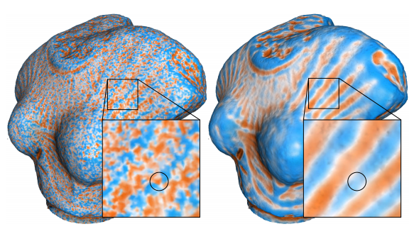

- Generated on Thu Sep 10 2026 11:45:13 for Ponca by
 1.9.8
1.9.8
|
Ponca
82fc77e8c6294111c6f00670e92ec58a24e2ecf2
Point Cloud Analysis library
|
This page provides a detailed list of what the Fitting module has to offers.
We provide various approaches to approximate, analyze or characterize the geometric properties of local neighborhoods. In most situations, all these tools are based on the estimation of a geometric Primitive approximating the neighborhood, on top of which we provide more advanced computations. The table below summarizes the Primitives available in the library, as well as the associated fitting techniques:
| Computed primitive | Required Input | Fitting techniques |
|---|---|---|
| Line | Points only | CovarianceLineFitImpl (nD) |
| Plane | Points only | CovariancePlaneFitImpl (nD) |
| Plane | Oriented points | MeanPlaneFitImpl (nD, co-dimension 1) |
| MongePatch | Points only | MongePatchQuadraticFitImpl and MongePatchRestrictedQuadraticFitImpl (both 3D) |
| AlgebraicSphere | Points only | SphereFitImpl (nD) [9] |
| AlgebraicSphere | Oriented points | OrientedSphereFitImpl (nD) [9] |
| AlgebraicSphere | Non-oriented points | UnorientedSphereFitImpl (nD) [6] |
Ponca also provide methods to compute objects that are not geometric primitives, but provide other informations such as curvatures:
| Computed object | Required Input | Fitting techniques |
|---|---|---|
| Barycenter | Points only | MeanPosition (nD) |
| Normal Vector | Oriented points | MeanNormal (nD, co-dimension 1) |
| Covariance Matrix | Points only | CovarianceBase (nD) |
| Weingarten Map | Points only | FundamentalFormWeingartenEstimator (3D) via MongePatch |
| Weingarten Map | Oriented points | NormalDerivativeWeingartenEstimator (3D) |
As described in fitting_extensions_deps, The tool classes provides different kinds of compute capabilities. To describe what a class requires, we use C++20 concepts. Each module has its own concepts file. For fitting tools and extensions, the requirements are described in this file: Fitting/concepts.h. For each concept, a cast operator is provided (typically first line). All subsequent operation should be valid, with the '->' further describing the return type.
Ponca offers several ways to compute curvatures, most of which are reviewed and compared by Arnal-Anger et al. in [4] and listed in the table below:
| Estimator Name | Estimated quantities | Usage |
|---|---|---|
| Distance to PCA plane [8] | Mean curvature | Method potential() using FitSmoothNormalCovariance = Basket<Point, WeightSmoothFunc, CovariancePlaneFit>;
|
| Surface Variation [16] | Mean curvature | Method surfaceVariation() using FitSmoothNormalCovariance = Basket<Point, WeightSmoothFunc, CovariancePlaneFit>;
|
| Growing Least Squares [14] | Mean curvature | Basket<P,W,OrientedSphereFit,GLSParam> // method kappa() |
| Point Set Surfaces (PSS) [3] | Curvature Tensor | API of CurvatureEstimatorBase : using EstimatorSmoothNormalCovariance =
BasketDiff<FitSmoothNormalCovariance, FitSpaceDer, CovariancePlaneDer, NormalDerivativeWeingartenEstimator,
WeingartenCurvatureEstimatorDer>;
CovariancePlaneDerImpl< DataPoint, _NFilter, DiffType, CovarianceDer< DataPoint, _NFilter, DiffType, MeanPositionDer< DataPoint, _NFilter, DiffType, T > > > CovariancePlaneDer Helper alias for Plane fitting on 3D points using CovariancePlaneFitImpl. Definition covariancePlaneFit.h:126 |
| Monge Patch fitting (comparable to jets fitting[5] ) | Curvature Tensor | API of CurvatureEstimatorBase using a QuadraticHeightField: using FitMongeSmooth = Basket<Point, WeightSmoothFunc, MongePatchQuadraticFit>;
|
| Monge Patch fitting (comparable to jets fitting[5] ) | Curvature Tensor | API of CurvatureEstimatorBase using a RestrictedQuadraticHeightField: using FitMongeRestrictedSmooth = Basket<Point, WeightSmoothFunc, MongePatchRestrictedQuadraticFit>;
|
| Algebraic Point Set Surfaces (APSS) [9] | Curvature Tensor | API of CurvatureEstimatorBase: NormalDerivativeWeingartenEstimator, WeingartenCurvatureEstimatorDer>;
OrientedSphereDerImpl< DataPoint, _NFilter, DiffType, MeanPositionDer< DataPoint, _NFilter, DiffType, T > > OrientedSphereDer Helper alias for Oriented Sphere fitting on 3D points using OrientedSphereDerImpl. Definition orientedSphereFit.h:136 |
| Algebraic Shape Operator (ASO) [12] | Curvature Tensor | API of CurvatureEstimatorBase: NormalDerivativeWeingartenEstimator, WeingartenCurvatureEstimatorDer>;
|

| Class name | Parameters | Documentation |
|---|---|---|
| DistWeightFilter | Eval location: p, Radius: t | Filter points further than t, and weigh them according to kernel (Available Weighting kernel) |
| NoWeightFilter | Eval location: p | Constant kernel for every point. Does not check for radius unlike DistWeightFilter with contant kernel. Transform neighbors to local frame. |
| NoWeightFilterGlobal | Eval location: p | Constant kernel for every point. Does not check for radius unlike DistWeightFilter with contant kernel. Keep neighbors coordinates in global frame |
| NeighborFilterStoreNormal | Eval location: p, Radius: t, Normal: n | Stores normal. It extends another filter as template param |
During any computation, each neighbor can be weighted by an amount defined by \(w(x) = \phi\left(\frac{||x - p||}{r}\right)\), where \(p\) is the evaluation location and \(r\) is the radius. This sections list the different function \(\phi\) available in Ponca.
| Class | Expression |
|---|---|
| ConstantWeightKernel<_Scalar> | \(\phi(x) = 1\) |
| SmoothWeightKernel<_Scalar> | \(\phi(x) = (x^2 - 1)^2\) |
| PolynomialSmoothWeightKernel<_Scalar, m, n> | \(\phi(x) = (x^n - 1)^m\) |
| WendlandWeightKernel<_Scalar> | \(\phi(x) = (1 - x)^4(4x + 1)\) |
| SingularWeightKernel<_Scalar> | \(\phi(x) = \frac{1}{x^2}\) |
| CompactExpWeightKernel<_Scalar> | \(\phi(x) = \exp\left(\frac{-x^2}{1 - x^2}\right)\) |
| GaussianWeightKernel<_Scalar> | \(\phi(x) = \exp\left(-\frac{1}{2}x^2\right)\) |